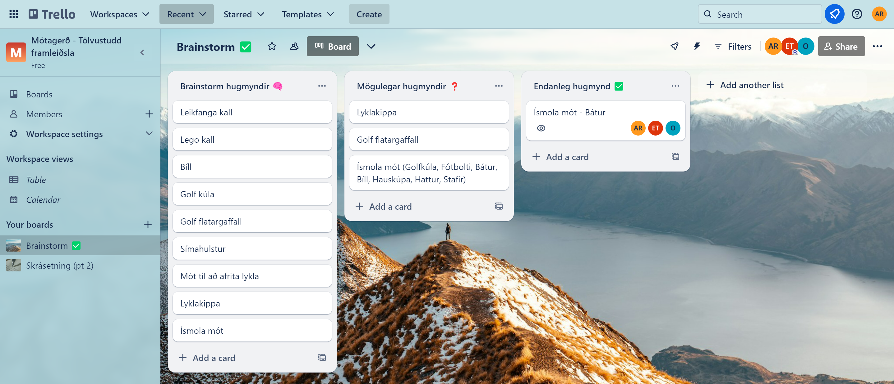
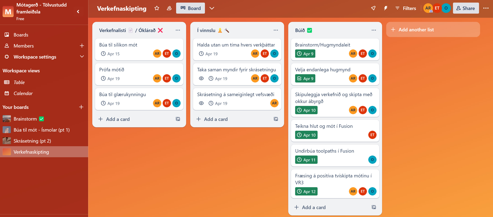
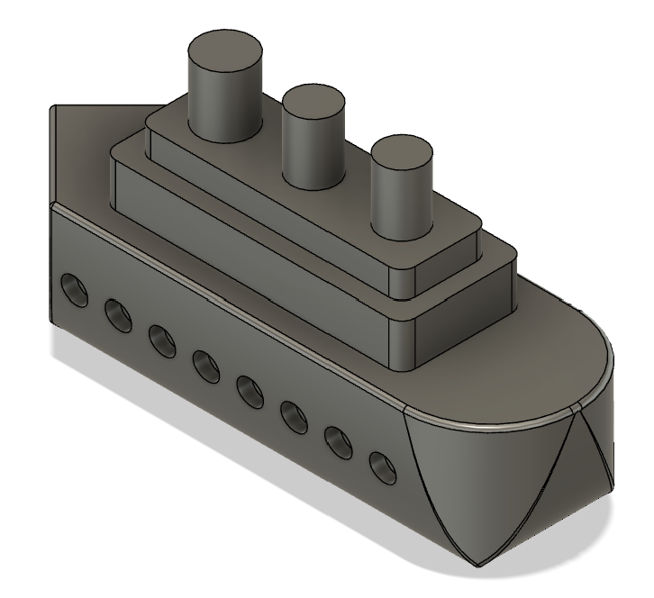
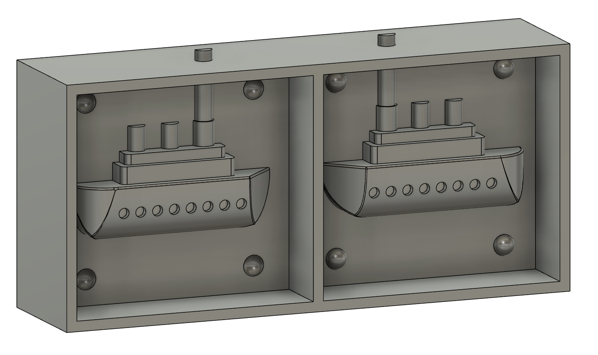
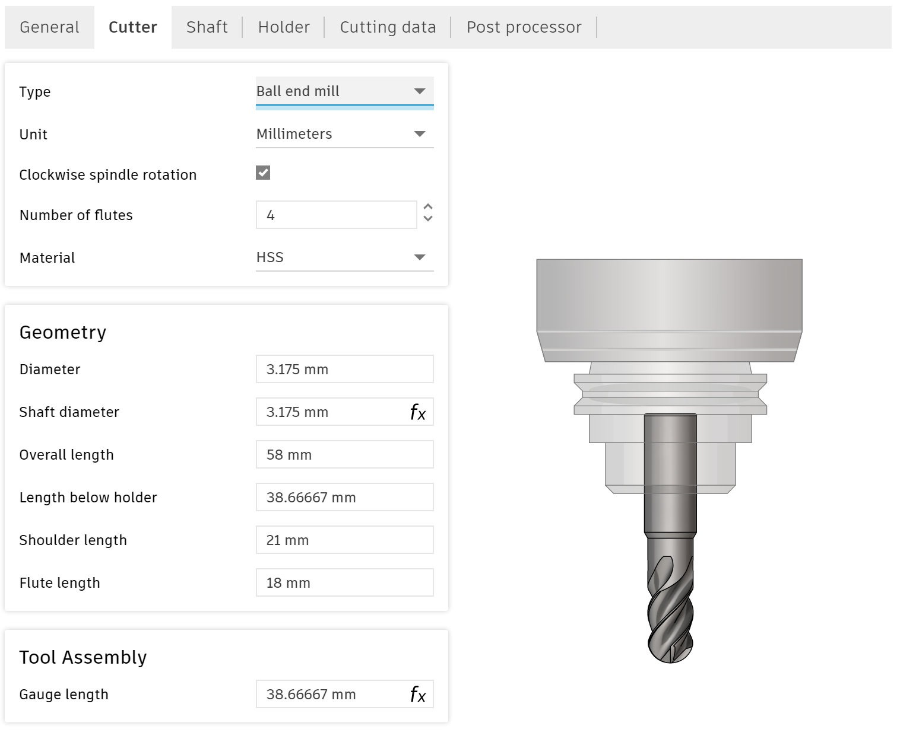
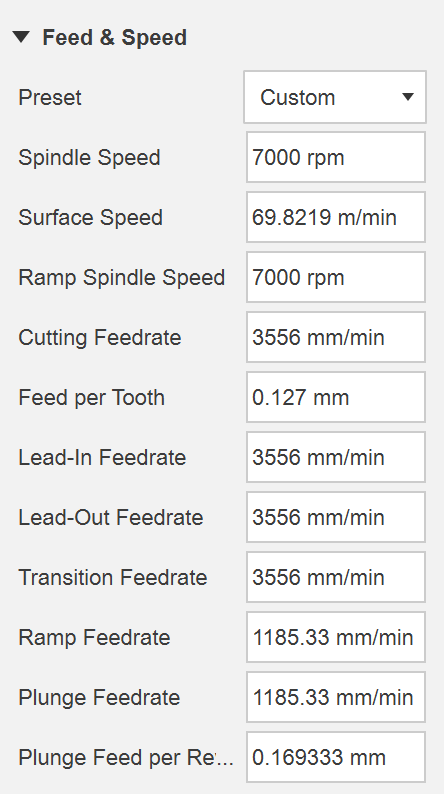

Lokaverkefni
Fræsing
Þetta verkefni var unnið í sameiningu með Örvari Erni og Agli Smára (Hópur 4).
Verkefnislýsing
Lokaverkefnið snýst um að búa til eitthvað heilstætt verkefni með því að innvinkla eina af tveimur aðferðum hér að neðan.
1. Hannið, teiknið, undirbúið og fræsið eitthvað með Shop Bot. Skipuleggið og skrásetjið feeds og speeds, toolpaths ofl fyrir það sem var hannað. Í boði verða 1500x1500mm af 18mm krossvið.
2. Hannið, teiknið, undirbúið og fræsið mót í vax með Roland SRM-20. Undirbúið toolpaths, bæði roughing og finishing. Í boði verður 15x7x4cm vax ásamt sílikoni til mótagerðar.
Að auki á að skrásetja á sameiginlegt vefsvæði; hönnunarþætti, framkvæmd, verkefnastjórnun og skipulag, samsetningu ofl. Ásamt því að nota aðferðafræði verkefnastjórnunar til að skipuleggja vörður, skipta með okkur ábyrgð og ákveða tímaramma hvenær hvaða verkþáttur er framkvæmdur. Að lokum á að búa til fimm mínútna glærukynningu og kynna verkefnið fyrir bekknum við lok áfangans.
Hugmyndaleit og verkefnastjórnun
Fyrsta skrefið var að ákveða hvora aðferðina við vildum nota. Eftir að hafa velt báðum möguleikum fyrir okkur ákváðum við að velja að fræsa mót í vax. Þegar búið var að ákveða það þurfti að fara af stað í hugmyndaleit til að finna út úr því hvað við ætluðum okkur að búa til. Einnig þurftum við að skipta með okkur ábyrgð og ákveða tímaramma hvenær hvaða verkþáttur er framkvæmdur en til þess notuðum við Trello sem er skipulagsforrit. Hér að neðan má sjá hvernig hugmyndaleitin þróaðist
Það tók okkur nokkurn tíma að finna út endanlega hugmynd en að lokum fannst okkur mest spennandi að búa til ísmola mót. Okkur datt í hug nokkra hluti sem hægt væri og enduðum á því að velja bát.
Þegar við höfðum ákveðið hlutinn sem við ætluðum að fræsa þurftum við að skipta með okkur verkum og skipuleggja næstu skref með verkefnastjórnun. Hér að neðan má svo sjá nokkurn veginn hvernig þessu öllu var skipt á milli okkar
Eftir að hafa klárað þetta var komið að því að teikningu í Fusion.
Teikning í Fusion
Við hönnunina á bátnum þurfti að passa að fara ekki út í einhver óþarfa smáatriði en teikningin mátti heldur ekki vera of einföld. Hér má sjá fyrstu skrefin í teikningunni en fyrst var botninn á bátnum teiknaður. Næst þurfti að bæta ofan á bátinn og ákveðið var að hafa þrjá strompa á honum. Að auki bættum við nokkrum gluggum á báðum hliðum bátsins.
Nú var grunnurinn á bátnum kominn og það sem var gert næst var að setja fillet á hinar ýmsu hliðar til að báturinn liti aðeins betur út.
Þar með var módelið komið og næsta skref var að búa til mót úr módelinu til að gera það tilbúið fyrir fræsinguna. Til þess fylgdum við eftirfarandi þremur myndböndum sem fylgdu með í verkefnalýsingunni og skýrðu mótagerðina vel: Myndband 1, myndband 2 og myndband 3. Eftir að hafa fylgt öllum myndböndunum leit mótið okkar svona út.
Toolpaths og Fræsing
Það sem þurfti að gera næst var að undirbúa toolpaths fyrir fræsinguna. Við fórum eftir þessu myndbandi sem fylgdi einnig í verkefnalýsingunni. Í grófum dráttum er myndbandið þannig að fyrst þarf að fara úr design og yfir í manifacture og búa til nýtt setup, þar sem z-ásinn snýr upp. Næst er valið pocket clearing sem er að finna undir 3D. Þar inni undir Tool þarf að velja verkfæri sem verður notað, sem í þessu tilfelli er svokallað flat end mill.
Viðeigandi stillingar á verkfærinu má sjá í áður nefnda myndbandinu. Þegar þetta er klárt er farið aftur í 3D en nú er valið flat í stað pocket clearing. Eins og áður er farið í tool og búið til flat end mill verkfæri með stillingum úr myndbandinu. Að lokum til að setja upp síðustu gerðina af fræsingu er valið parallel undir 3D. Í þessu tilfelli er ekki notast við flat end mill heldur tapered mill. Eins og fyrir hitt má sjá stillingarnar fyrir þetta verkfæri í myndbandinu. Eftir að hafa farið í gegnum þetta myndband er post processing það eina sem er eftir áður það er hægt að fara fræsa.
Síðan kom í ljós að þessi vinna hafði ekki mikinn tilgang þar sem við þurftum að fara í gegnum þetta allt upp á nýtt með Hafliða. Það er vegna þess að borinn sem við notum í Shop Bot í VR3 er ekki sá sami og í myndbandinu. Einnig eru aðrir hlutir sem þurfti að stilla öðruvísi en í myndbandinu. Það gekk þó alveg ágætlega fyrir sig þar sem Hafliði gat aðstoðað okkur vel í þessu.
Borinn sem við notuðum er 1/8 tomma, 4 flute og ball end mill. Hér má sjá stærðir hans nánar
Svo voru tvær mikilvægar stillingar sem þurfti að velja en það er spindle speed og feed per tooth eða feed og speed sem má sjá á næstu mynd.
Þessar stillingar ásamt fleirum eru hluti af roughing þar sem meiri hlutinn af vaxinu er fjarlægður. Næst eru finishing stillingar stilltar en þær eru svipaðar og áður nema að hér eru meiri smáatriði skorin út en í roughing. Þar með var vaxmótið tilbúið fyrir fræsinguna í Roland SRM-20.
Eftir aðeins meiri hjálp frá Hafliða var fræsingin sett í gang en í heildina tók hún eitthvað um þrjá klukkutíma. Það þurfti að gera hlé á fræsingunni af og til að hreinsa mesta kurlið sem myndaðist í vélinni í burtu. Það tók ekki mikinn tíma fyrir mikið kurl að myndast og var það hreinsað til að það færi ekki að festast í legum og valda skemmdum á vélinni. Fræsingin var framkvæmd á föstudegi og ákveðið var að gera sílikon mótið eftir helgi á mánudeginum.
Sílikon mót
Við mættum á mánudeginum í VR3 til þess að setja sílikonið í positíva (fræsta) mótið og þar af leiðandi að búa til negatívt mót úr sílikoni. Við fengum sílikon frá Hafliða sem var að verða útrunnið. Heitið á þessu sílikoni er ZA 35-15 Glass og er frá framleiðandanum Zhermack. Síðan reiknuðum við um það bil rúmmálið sem þurfti í positíva mótið. Þeirri stærð deildum við í tvennt þar sem að þetta eru tvö efni sem þarf að blanda saman. Því næst keyptum við nokkur kaffimál í Hámu og fundum út hæðina sem þurfti til að fylla í kaffimálin, þ.e. fyrir efnið 'base'.
Næsta skref var að mæla þyngdina á efninu sem við settum í fyrra kaffimálið en hún var um 110 grömm. Síðan settum við jafn mikið af seinna efninu í seinna kaffimálið þar sem að hlutföllin áttu að vera nákvæmlega 1:1. Svo helltum við seinna efninu í það fyrra og hrærðum mjög vel í því með sykurpúða pinna. Mikilvægt var að hræra rólega svo að loftbólur myndu ekki myndast í efninu.
Þegar þessu var lokið var blöndunni hellt ofan í vaxmótið og aftur þurfti að passa að það væru engar loftbólur og mótið sett á stað þar sem það gat verið óáreitt því það tekur langan tíma fyrir sílikonið að harðna. Við mælum með því að hella í mótið þar sem hægt er að geyma það. Við gerðum það nefnilega ekki og þurftum að bera mótið þegar það var stútfullt um 10 metra án þess að sulla niður. Einnig væri hægt að hella í mótið að mestu leyti og fylla það síðan þegar það er komið á sinn stað. Þá var ekkert eftir nema að bíða eftir því að sílikonið myndi harðna.
Prófun á mótinu
asdf
Tími sem fór í hvern verkþátt
| Nr | Verkþáttur | Klukkutímar |
|---|---|---|
| 1 | Hugmyndaleit | 2 |
| 2 | Verkefnastjórnun í Trello | 1 |
| 3 | Teikning í Fusion | 4 |
| 4 | Toolpath í Fusion | 3 |
| 5 | Fræsing | 3 |
| 6 | Sílikon Mót | 1 |
| 7 | Vefsíðugerð | 6 |
| 8 | Kynning | xx |
| Heildartími | xxxx |